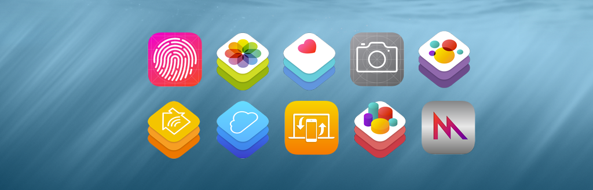

iOS 8
What new in iOS 8 ?

WWDC 14 မှာ iOS 8 ကို မိတ်ဆက်ခဲ့ပါတယ်။ iOS 8 အသစ်မှာ ကျွန်တော်တို့ developer တွေအတွက် လုပ်ဆောင်ခွင့်တွေ ပိုများလာတယ်။ နောက်ပြီး langauge အသစ် Swift လည်း ထွက်ပေါ်လာပါတယ်။ WWDC 14 မှာ OS X အသစ်ဖြစ်တဲ့ Yosemite ကို မိတ်ဆက်ပါတယ်။ Yosemite နဲ့ iOS 8 ဟာ Continuity ပါဝင်လာတာကို တွေ့မြင်ရပါလိမ့်မယ်။
ကျွန်တော်တို့ iOS Developer တွေ အတွက် iOS 8 မှာ အသစ်ပါဝင်လာတွေကတော့

ကျွန်တော်တို့တွေဟာ iOS 8 မှာ extension တွေ ရေးလို့ရပါပြီ။ ခွင့်ပြုလိုက်တဲ့ extension တွေကတော့
တို့ပဲ ဖြစ်ပါတယ်။
Today extension ဆိုတာကတော့ widget ပါပဲ။ iOS 8 widgets တွေဟာ keyboard ကနေ data ထည့်သွင်းဖို့ ခွင့်မပြုထားပါဘူး။ User အနေနဲ့ widget app ကနေ configure လုပ်ပေးဖို့လိုပါတယ်။ ဥပမာ။။ stock widget ဆိုရင် stock app ကနေ ပြီးတော့ list ကို စီစဉ်ပြုပြင်ပေးရပါတယ်။
iOS 6 မှာ ကနေ စပြီးတော့ UIActivityViewController ကနေ share activity ကို စတင်မိတ်ဆက်ခဲ့ပါတယ်။ iOS 6 နဲ့ ပဲမှာတော့ Share Acitvity အတွက် မိမိရဲ့ App ထဲမှာ ရေးထည့်ရပါတယ်။ ဒါကြောင့် share activity နဲ့ တွဲသုံးဖို့အတွက် ကိုယ်တိုင်ရေးရတာတွေ ရှိသလို သီးသန့်ပေးထားတဲ့ SDK တွေနဲ့ အသုံးပြုရတာ ရှိပါတယ်။
အခု iOS 8 မှာတော့ တခြား App တွေက ရေးထားတဲ့ share activity တွေကိုလည်း system wide အသုံးပြုလို့ရပါပြီ။ ဒါကြောင့် အရင်တုန်းကလို facebook , twitter share တင်မကပဲ pinterest , pocket စတဲ့ share တွေကို system တစ်ခုလုံးမှာ အသုံးပြုနိုင်ပါလိမ့်မယ်။ ဒါကြောင့် developer အနေနဲ့လည်း share activity အတွက် သီးသန့် အများကြီး ထပ်ဖြည့်ရေးနေဖို့ မလိုတော့ပါဘူး။
Action ကတော့ share နဲ့ ဆင်တူပါတယ်။ သို့ပေမယ့် သူကတော့ share တာမဟုတ်တော့ပဲ Editing လိုမျိုးတွေ အတွက်ပါ။ ဥပမာ ကျွန်တော်တို့တွေ တရုတ်လိုရေးထားတဲ့ website ကို bing translate action သုံးပြီးတော့ အင်္ဂလိပ် ဖတ်လို့ရတယ်။ နောက်ပြီးတော့ ကျွန်တော်တို့ App တွေထဲက ဓာတ်ပုံကို action ဖန်တီးထားတဲ့ photo editor ကနေ ဖွင့်ပြီးတော့ photo edit တွေ လုပ်လို့ရပါတယ်။
Photo editing ဆိုတာကတော့ photo တွေ video တွေကို iOS ရဲ့ Photos App ကနေ edit လုပ်ခွင့်ပေးထားတာပါ။ Edit လုပ်ပြီးသွားရင်တော့ user ကို confirm လုပ်ပါမယ်။ Original version ကို တော့ overwrite မလုပ်သွားပါဘူး။ ဒါကြောင့် user အနေနဲ့ ပြင်ထားတာကို ပြန်ပြီးတော့ original ကို ပြန်ပြောင်းလို့ ရပါတယ်။
App အနေနဲ့ document တွေကို iCloud storage သာမက တခြား cloud drive တွေမှာလည်း သိမ်းနိုင်ပါတယ်။ သို့ပေမယ့် cloud drive တွေ အနေနဲ့ storage provider extension ကို ရေးသားထားပေးဖို့ လိုပါတယ်။

Apple က iOS 8 မှာ ကိုယ်ပိုင် keyboard ရေးသားခွင့်ပေးလိုက်ပါပြီ။ ဒါကြောင့် swype keyboard ဟာ iOS 8 မှာ ရရှိလာနိုင်ပါလိမ့်မယ်။ ဒါ့အပြင် မြန်မာ keyboard တော်တော်များများကိုလည်း တွေ့မြင်လာနိုင်ပါတယ်။

Touch ID ကို အသုံးပြုပြီးတော့ user authenticate လုပ်ခွင့်ပေးထားပါပြီ။ တချို့ app တွေဟာ secure user access ကို အသုံးပြုချင်တဲ့ အခါမှာ Touch ID ကို အသုံးပြုနို်ငပါတယ်။ အဲဒီ အတွက် Local Authentication Framework (LocalAuthentication.framework) ကို အသုံးပြုဖို့လိုပါတယ်။

iOS 8 SDK မှာ Photo Framework အသစ်ပါလာပါတယ်။ Photo app ထဲမှာ photo edit လုပ်တဲ့ app ကို ထည့်ခွင့်ပြုလိုက်တာပါ။ ဒါကြောင့် Photo Editing ကို Photo App ကနေ ကြိုက်တဲ့ App နဲ့ Edit လုပ်လို့ရလာပါလိမ့်မယ်။

iOS 8 မှာ game နဲ့ ပတ်သက်ပြီး ကြီးကြီးမားမား အပြောင်းအလဲကတော့ Metal ပါပဲ။ ဒါ့အပြင် 3D gaem တွေ အတွက် လွယ်လွယ် ကူကူ ရေးနိုင်မယ့် Scene Kit ကို ပါ မိတ်ဆက်ခဲ့ပါတယ်။

Metal ကို အသုံးပြုပြီး game တွေဟာ A7 GPU အတွက် high performance ရစေပါတယ်။ A7 GPU အတွက် ဖန်တီးထားတာဖြစ်ပြီး OpenGL ထက် များစွာ မြန်ဆန်စေပါတယ်။ Metal ကြောင့် iOS platform မှာ console game quality ကို ကျွန်တော်တို့တွေ မြင်တွေ့ရပါလိမ့်မယ်။

Scene Kit ဟာ Objective-C framework ဖြစ်ပြီးတော့ ရိုးရှင်းလွယ်ကူတဲ့ 3D game တွေကို high-level API ကို အသုံးပြုပြီး ရေးသားဖို့ ဖြစ်ပါတယ်။ Scene Kit ဟာ OS X10.8 မှာ ကတည်းက OS X မှာ အသုံးပြုနိုင်ပါတယ်။ iOS မှာတော့ iOS 8 မှ စပြီး အသုံးပြုနိုင်ပါတယ်။
Scene Kit ရဲ့ 3D physics engine မှာ gravity , forices , body collisions , joints စတာတွေ ပါဝင်ပါတယ်။ High-level API ဖြစ်တာကြောင့် cras လိုမျိုး ဘီးပါတဲ့ စက်တွေကို လွယ်လင့် တကူ ဖန်တီးနိုင်မယ်လို့ ဆိုပါတယ်။

iOS 7 က Spirte Kit ကို iOS 8 မှာ feature အသစ်တွေ ထပ်ဖြည့်ထားပါတယ်။ Feature အသစ်မှာ OpenGL ES shaders , lighting တွေ အပြင် Scene Kit နဲ့ တွဲပြီးလည်း အသုံးပြုနိုင်ပါလိမ့်မယ်။ Physics bodies တွေကို per-pixel collision masks ဖန်တီးနိုင်ပါပြီ။ Xcode 6 မှာ new shader နဲ့ scene editors ပါဝင်ပါတယ်။ အသေးစိတ်ကိုတော့ Sprite Kit Framework Reference နှင့် Sprite Kit Programming Guide မှာ ဖတ်ရှုနိုင်ပါတယ်၊

Health Kit (HealthKit.framework) မှာ iOS 8 မှာ ပါဝင်လာတဲ့ framework အသစ်ပါ။ ကျန်းမာရေး နဲ့ လေ့လကျင့်ခန်းဆိုင်ရာ အချက်လက်တွေကို ရိုးရှင်းလွယ်ကူစွာ သိမ်းဆည်းထားဖို့ အတွက်ပါ။ သိမ်းဆည်းထားတဲ့ data တွေကို Health App ကနေ တဆင့် ပြန်ပြီး ကြည့်ရှုနိုင်အောင် ဖန်တီးထားပါတယ်။ App ဟာ Health Kit support လုပ်ထားရင် user ရဲ့ ခွင့်ပြုချက်ဖြင့် health-related information တွေကို ရယူနိုင်ပါတယ်။

Home Kit (HomeKit.framework) ဟာလည်း iOS 8 မှာ ပါဝင်လာတဲ့ framework အသစ်ပါ။ အသုံးပြုသူရဲ့ အိမ်မှာ ရှိတဲ့ device တွေဟာ phone နဲ့ ချိတ်ဆက်ပြီး လုပ်ဆောင်နိုင်အောင်ပါ။ Siri ကို အသုံးပြုပြီးတော့ device တွေ ကို ခိုင်းစေလို့ ရတယ်လို့လည်း ဆိုထားပါတယ်။
iCloud မှာ အပြောင်းအလဲ အချို့ ရှိပြီးတေ့ လက်ရှိ app icloud app တွေ အနေနဲ့ ပြောင်းလဲ မှုတွေ လုပ်ဖို့ လိုပါလိမ့်မယ်။

အရင်တုန်းက iCloud နဲ့ မတူတော့ပဲ Document တွေအတွက် UIDocumentPickerViewController ပါဝင်လာပါတယ်။ ဒါကြောင့် အခြား app က document data တွေကိုလည်း ကိုယ့် app မှာ အသုံးပြုနိုင်ပါလိမ့်မယ်။ ဒါ့အပြင် iCloud သာမက Storage Provider extension ရေးထားတဲ့ thrid-party က document တွေလည်း app ကနေ အသုံးပြုနိုင်ပါမယ်။

Cloud Kit (CloudKit.framework) ဟာ server side မလိုတော့ပဲ App တွေကို ရေးသားနိုင်ဖို့ အတွက်ပါ။ Parse လိုမျိုး backend as a service ပုံစံ မျိုးပါပဲ။
Free အနေနဲ့ကတော့
Storage
1PB for assets
10TB for database
Data Transfer
5TB/day for assets
50GB/day for database
ရမှာ ဖြစ်ပါတယ်။